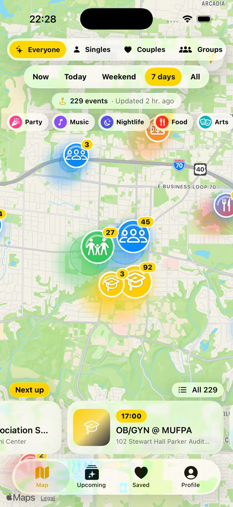
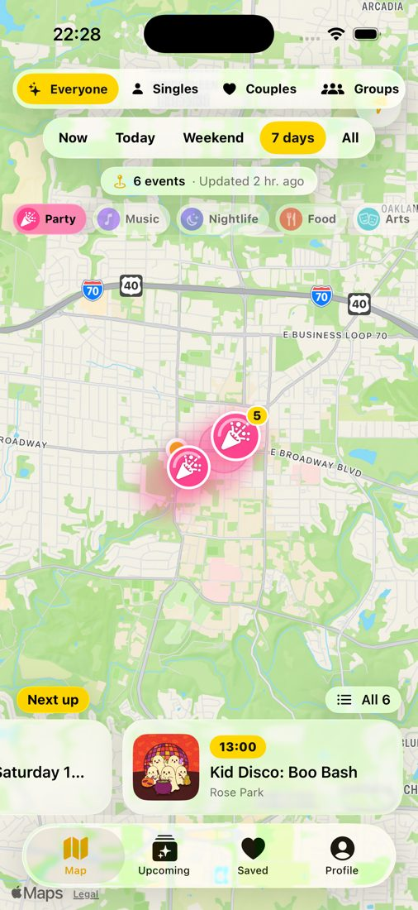
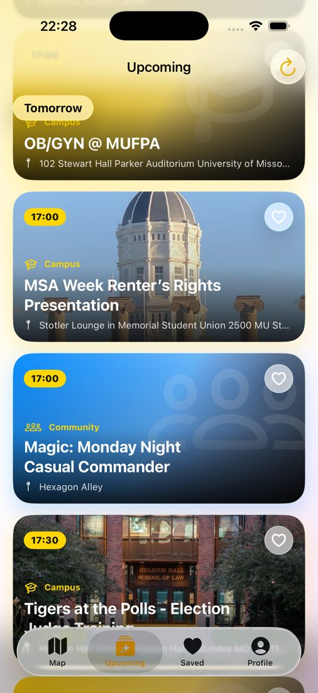
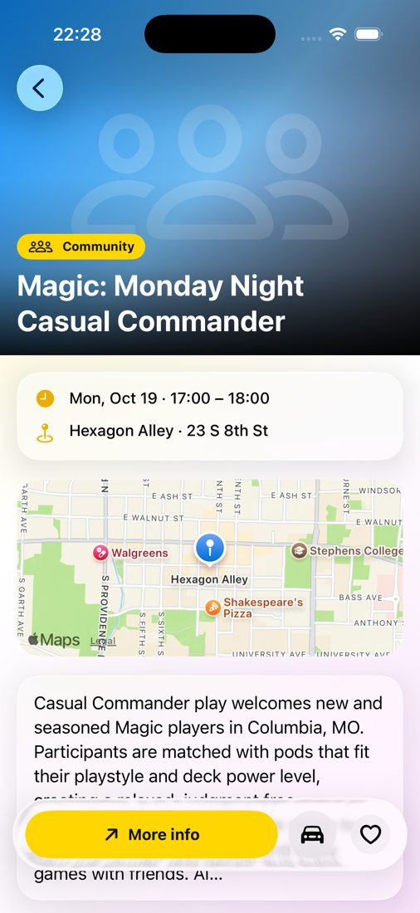
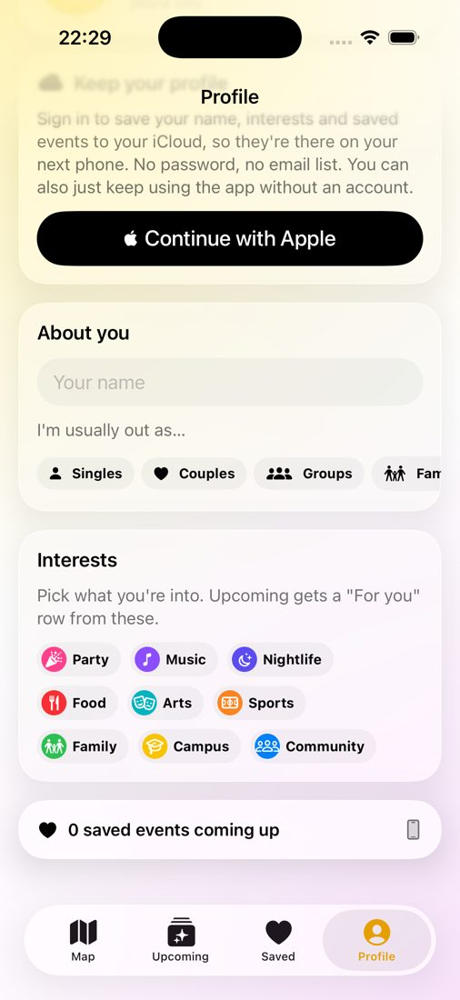

CoMo Events puts every public event in Columbia, Missouri on one live map: Mizzou, downtown, concerts, bars, markets, churches and temples, the library, kids' days, races and more. This page lists every feature in the iPhone app and the web app, in detail.
The first screen. Open it and you see what's happening around you, grouped so a busy downtown night is still easy to read.
Pins that say what it is iPhoneWeb
Ten categories, each with its own symbol and color: Party, Music, Nightlife, Food, Arts, Sports, Family, Campus, Faith and Community.
A number badge shows how many events a pin holds, from 2 up to "99+".
Heat glow: soft yellow-to-amber rings sit under busy areas, so you can spot where the night is.
Pins cluster when you zoom out and split apart as you zoom in.
Places with names iPhoneWeb
Zoom in and pins group by venue, each with the place name underneath (the venue, or the street address when there is no venue name).
Zoomed out, only the busiest places (5 or more events) show a name, so labels never pile up.
Tap a place to see every event happening there, with the address and a Directions button that opens Apple Maps.
Every venue we know is geotagged: over 100 Columbia venues are hand-checked, and the rest are found from their address.
Next up strip iPhoneWeb
A row of cards floats over the bottom of the map with what starts soonest, marked LIVE when it has already begun.
Tap a card and the map flies to that event and opens it.
All opens the full list of everything the map is showing.
In the "Now" view the strip becomes Happening now.
Seasonal pins iPhoneWeb
Big seasons get their own emoji pin. In October, Halloween events (costume parties, trunk-or-treats, haunted houses, pumpkin patches) show as glowing 🎃 pins.
Seasonal picks are boosted in the lists while their season lasts.
Your location iPhoneWeb
A blue dot shows where you are, and the location button re-centers the map on you.
A compass appears when you rotate the map. Tap it to point north again.
Your location is used only on your phone to draw the map. It is never sent anywhere.
Live counts iPhoneWeb
The bar under the filters shows how many events match, when the feed was last updated, and how many people in town use CoMo Events.
Three filters shape everything at once (map, lists and suggestions), and search understands what you mean, not just the exact words.
When iPhoneWeb
Now: what's going on right this minute.
Today, Weekend (Friday evening through Sunday), 7 days, or All (the next two months).
Who it's for iPhoneWeb
Everyone, Singles, Couples, Groups or Family.
Pick Couples and you see date-night picks (wine tastings, concerts, dinners). Pick Family and you see story times, kids' days and family festivals.
Every event also lists who it's good for.
What iPhoneWeb
Category chips (Party, Music, Nightlife, Food, Arts, Sports, Family, Campus, Faith, Community). Tap one or several to narrow the map.
Smart search iPhoneWeb
Understands topics: "hindu temple", "date night", "live jazz", "kids", "free food" or "trivia" find the right events even when the listing uses different words.
Forgives typos ("karoke", "farmer market") without matching nonsense.
Time words: "tonight", "this weekend", "tomorrow", "saturday" limit the results to that time.
Results come back as Best matches, ranked so exact hits beat loosely related ones, with repeats of the same event folded together.
Searches by event name, venue, organizer or description.
Upcoming list iPhoneWeb
Every event as a picture card, day by day, with the best events of each day first.
Ranking weighs well-known venues, complete listings (time, place, picture, details) and what you like.
Every event has a picture: the event's own photo, sharpened to full size, or a cover drawn for it so the list never shows a blank box.
For You iPhoneWeb
Choose your interests in Profile and Upcoming gets a For you row of matching events in the next week.
It also learns from what you save, mark Going or open. That taste profile stays on your device.
🎟️Event details
Everything you need to decide and go, on one page.
The essentials iPhoneWeb
Picture, title, day and time (or "all day"), venue, address and a small map.
Price or "Free" when the listing says so, organizer and the full description.
Good for: singles, couples, groups or families.
Source, plus "Also listed on N other sites" when the same event was found in more than one place.
One-tap actions iPhoneWeb
Tickets and the event's website.
Directions in Apple Maps.
Call the venue (the number comes from the listing or our venue list).
Add to Calendar: Apple's own event sheet, already filled in (on the web, a calendar file for any calendar app).
Share (next section) and Save (the heart).
Share cards iPhoneWeb
On iPhone, sharing makes a square picture card of the event (picture, title, time, place) for Messages, Instagram stories or AirDrop.
Each card carries a small "Get the app" QR code, so every share is also an invite.
On the web, Share sends the event's own link (comoevent.com/e/…), which anyone can open without the app.
❤️Saving and reminders
Heart what you like and CoMo Events remembers it for you.
Saved tab iPhoneWeb
All your hearted events in one list, soonest first.
Works without an account. Sign in and your saves sync between your iPhone and the website through your own iCloud.
Reminders iPhone
Remind me before saved events: a notification one hour before anything you've hearted.
Tonight in CoMo: an optional 4 PM heads-up with what's on that evening.
Both are local notifications made on your phone. Turn either one off in Profile.
👋Going and friends
See what's popular, and go out with people you know.
Going, I'm here, Went iPhoneWeb
Mark yourself Going before an event, I'm here while you're there, and Went after.
Every event shows everyone's counts: "12 going", "4 here now", "30 went".
Tap your status again to clear it.
Friends by code iPhoneWeb
Turn on Friends to get your own 6-letter code. Add a friend by typing their code.
See which saved events you have in common, and who is going where.
Sharing your own saved events with friends is a separate switch, off by default.
Event pages show which friends saved it, are going, or are there now, and small bubbles with their initials sit on the map pins where they are headed.
Remove, block or report a friend at any time.
Invite people iPhoneWeb
Invite from Contacts: pick people with Apple's contact picker (no access to your whole address book) and a text with the app link and your code opens, ready to send.
Or share the install link anywhere.
📣Post an event
Anyone can add an event for free: a show, a market, a club meeting, a church supper, a yard-sale-sized festival. It goes live on the map and in search right away.
Quick fill iPhoneWeb
Scan flyer: take or pick a photo of a poster and the app reads it: title, date, start and end time, and venue are filled in, and the flyer becomes the event picture.
Scan QR codeiPhone or Paste link: point it at an event page (Eventbrite, a venue's website, a ticket page) and the form fills itself from that page.
Pick a known venue and its address, pin, phone and website are added for you.
The form iPhoneWeb
What and when: title, start, optional end time.
Where: venue and address.
Details: description, price, ticket or info link.
Photo: add your own picture (optional).
Also show under: extra categories so the right people find it.
Your name shows as "Posted by".
Live right away iPhoneWeb
No waiting for approval: your event appears on the map and in search for everyone within about a minute, and instantly for you.
Everyone's apps check for new posts every minute.
An automatic word filter holds back posts with slurs or explicit words.
See your posts and their status in Profile.
👤Profile and sign-in
Everything works without an account. Signing in only adds sync, friends and posting.
About you iPhoneWeb
Your name (the app greets you by it) and a profile picture.
Interests: pick what you're into for the For You row.
I'm usually out as… singles, couples, groups or family, so the map starts on your view.
Sign in iPhoneWeb
Sign in with Apple: no password, and your profile and saves live in your own private iCloud.
Sync now pulls your latest profile and saves onto this device.
Sign out keeps your profile on the phone. Delete my profile erases your profile and saved events everywhere.
Look and sound iPhoneWeb
Dark mode: the moon button at the top switches the whole app and map to dark, and back. Light is the default.
Sounds: a chime when the app opens, a pluck when you save, a soft tick on buttons and a sparkle when you sign in. They follow the silent switch, and you can turn them off.
Help iPhoneWeb
Send feedback, email us, rate the app, and read the community guidelines and privacy policy, all from Profile.
📱iPhone extras
Built with Apple's own tools so it feels at home on iPhone.
Siri and Shortcuts iPhone
"Hey Siri, what's happening in CoMo Events tonight": Siri answers with how many things are on tonight and the top picks, even when the app isn't open.
"Hey Siri, open the CoMo Events map."
Both appear in the Shortcuts app for your own automations.
Spotlight iPhone
Upcoming events are added to iPhone search, so typing "blue note" or "farmers market" from the home screen finds them. Tap a result to open the event.
Links and offline iPhone
Links, notifications and Siri open the exact event or search in the app.
The app keeps the last feed it downloaded, so the map and lists still work with a weak signal.
Liquid Glass design on iOS 26, and it runs on iOS 17 and later.

Map

Category filter

Upcoming

Event details

Profile
🌐The website
comoevent.com is the full app in any browser, on Android, Windows or Mac. Nothing to install.
The web app Web
The same five tabs as the iPhone app: Map, Upcoming, Saved, Friends and Profile.
Map, filters, smart search, place names, event pages, dark mode and sounds all work the same way.
Sign in with your Apple Account to sync saves, mark Going, add friends and post events, including flyer scanning.
A page for every event Web
Every event has its own page you can share, with the time, place, map and links.
The pages are built so Google and Bing show Columbia events in search results.
Holiday guides appear in season: Halloween, Thanksgiving, Christmas, New Year's Eve, Valentine's Day, St. Patrick's Day, the Fourth of July and graduation.